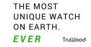

Gradability

The following applies to both adjectives and adverbs because the considerations are the same.
Before we start, mark the following right or wrong in your head and then click on the table for an answer.

If you have ticked a bit uniquely and crossed very blue,
don't worry. You are in good company.
The distinction here is that freezing, marvellously and
uniquely are examples of what some call ungradable adjectives or adverbs but
tall, warm, blue and humid are usually considered
gradable. This means:
- We allow expressions such as:
very warm
quite marvellously
extremely humid
because we are using the right modifiers: very and extremely for gradable concepts and quite (meaning completely) for more extreme ideas. - We do not allow expressions such as:
wholly warm
very marvellously
slightly unique
because we are using the wrong modifiers to change the meanings of gradable concepts.
 |
Getting the trees out of the way of the woods |
The first thing we need to address is just what is meant by
gradable or ungradable. In some analyses, you will find the
following mixture of adjectives and adverbs all described as
ungradable:
perfect, hideously, marvellously, fantastic, metal,
pregnant, disgustingly, completely
and so on.
It is clear that the adjectives, perfect, metal and
pregnant as well as the adverb completely are truly
ungradable so we cannot allow:
*very perfect
*somewhat metal
*a bit pregnant
*absolutely completely
because something or someone is either perfect or not, made of
metal or not, pregnant or not and you can finish something
completely or not finish it at all so there are no intermediate
stages as there are with, for example, gradable adjectives and
adverbs such as
good, nastily, nice, imaginatively, fat, happily
and so on so it is perfectly OK to allow:
very good
rather nastily
quite nice
extremely imaginatively
a little fat
very happily
to denote various shades of strength.
However, other adjectives and adverbs in the list are not
ungradable as much as they are irregular graded and they include,
for example:
marvellous, excellent, dreadful,
disgustingly, wonderful
and so on.
These are often described as extreme adjectives and the suggestion
sometimes is that they are ungradable. They are not, because
we can allow:
fairly marvellous
really excellent
utterly dreadful
somewhat disgustingly
totally wonderful
and all those phrases denote a grade of the adjective or adverb.
However, in none of these cases can we grade like this:
*very marvellous
*very excellent
*very disgustingly
and so on and this is why some describe them as ungradable.
The truth of the matter is that we can grade the
words but only by using a more limited set of adverbs to do so.
We have, therefore, to make a distinctions between:
- Truly ungradable terms
which have no intermediate stages such as:
iron, dead, completely, fully, empty, shattered, waterless
and so on. - Items unusually graded
because they are extreme which are gradable but differently so such as:
fantastic, boiling, soaking, enormous
and so on which are at one end or other of a scale and there is simply nowhere to go from there with ordinary grading expressions.
In what follows, we will try to keep this distinction in mind.
 |
Most adjectives and most adverbs are gradable |
By some estimates (probably wild guesses, in fact) there are some 100,000 adjectives and adverbs in English and the overwhelming majority will be gradable in the normal way. If we take a list of some common adjectives in English and a list of less common ones which mean something similar, this is what we can find:
| bad | terrible |
| big | enormous |
| dangerous | fatal |
| early | immediate |
| good | wonderful |
| high | towering |
| important | vital |
| large | huge |
| new | brand-new |
| old | senile |
| small | miniscule |
| young | infantile |
 |
Thinking task: Take that list and try to put the word very in front of them. Now try the same trick with absolutely. What do you find? Click |
- You can put very in front of all the adjectives in the left-hand column because they are common gradable adjectives.
- You can't put absolutely in front of the adjectives in the left-hand column.
- You can put absolutely in front of the adjectives in the right-hand column.
- You can't put very in front of the adjectives in the right-hand column.
The general rule is, therefore, that the more extreme adjectives
and adverbs can be modified by words such as absolutely,
utterly, quite and so on but the less extreme ones can usually
be modified by very.
It is sometimes said, as a shorthand guide, that the extreme
adjectives in the right-hand column above are ungradable but they
are, in fact gradable. We just need a different kind of
modifier to grade them.
When it comes to wholly ungradable adjectives and adverbs we are, therefore, dealing with exceptions. Most common
adjectives and adverbs are gradable in some way.
 |
Tests for gradability |
Ungradable adjectives and adverbs are often distinguished by these tests:
- They cannot be modified by very, slightly, a bit, a little, extremely, terribly, hugely, immensely, somewhat, reasonably, incredibly etc. We can't have: *very amazingly, *extremely complete, *slightly wonderfully, *somewhat ghastly, *hugely stunning and so on.
- When we do modify them, we use an intensifying adverb such as absolutely, completely, utterly, totally etc. So we get absolutely terrifying, utterly wonderful, totally unfeasibly etc.
- They are not usually used in the comparative or superlative
forms so we don't have, e.g., *more priceless, *less dead, *the
most unique etc.
(Microsoft Outlook users will by now have become inured to the admonition: To see the most complete, up-date content, open the file.)
There are problems with these tests, as we shall see.
 |
3 classes of ungradable adjectives and adverbs |
The normal way to analyse the issue is to identify three basic classes of ungradable adjectives and adverbs:
- Absolute meaning adjectives
These include words such as ultimate(ly), total(ly), entire(ly), unique(ly), absolute(ly), utter(ly), perfect(ly) where it is logically impossible to conceive of a grade. Terms like *more unique, *very perfectly and so on are, therefore, often considered wrong although you will find plenty of examples of their use: more average, less uniquely, very complete, more extreme, more total etc. Or even:

What one is prepared to accept is often a matter of formality and personal preference. - Specific on-off quality adjectives
These are usually adjectives and adverbs such as metal, pregnant, unlocked, French, fatally, justly etc. The reason these are not gradable is that one is either pregnant or not, something is either metal or it isn't, locked or unlocked and you are either fatally wounded or not (there's no intermediate stage). Again, this is often a rule flouted in colloquial speech and terms such as She's very French to refer to an attitude rather than a nationality are common. Note, too, that we can have less full, half empty and so on but not *very empty although very full is heard.
In the Daily Telegraph (a British national newspaper), we find, e.g.:
We're just very grateful that he's survived this incident because it could have turned out to be quite fatal
(The Daily Telegraph website) - Extreme
adjectives
(which include the concept of very
or extremely)
It is often averred (and it is often told to learners) that some 'extreme' adjectives and adverbs can only be modified with words like utterly, completely, really etc. The commonest lists include items such as:
and so on.Gradable form Ungradable form hot boiling cold freezing beautiful stunning surprisingly amazingly good wonderful badly awfully rudely obnoxiously nice delicious
It is also sometimes said, as we noted above that these are ungradable forms. They aren't; they just need a different form of grading.
This list and more is included in the section on gradability in the in-service guide to adjectives, linked below.
 |
A matter of scales |
The key to all this is to think about scales.
Ungradable adjectives and adverbs are variously called, strong, extreme or superlative adjectives and adverbs. They either:
- Cannot be scaled because they represent ideas which are
either present or absent. So, for example:
The original book is better than the film
contains an ungradable adjective because the book cannot be a little original or very original. It is either original or it is not.
If we use the adjective in a different sense, to mean something like imaginative, then it is scalable so we allow:
She has a very original mind. - Cannot be scaled because they represent the top or bottom of
a scale already.
We can have a scale, for example, describing the weather which could look like this:

but here the words freezing and boiling represent the ends of the scale so they cannot be graded with a word such as very. All the words in between can be graded like that but for the ends of the scale, we need words like absolutely or unbelievably.
We can do the same kind of thing with adverbs (here, the example is of indefinite frequency words):

and you can see that we can grade the terms in blue to get, e.g.:
very seldom
quite rarely
quite often
only sometimes
pretty usually
very frequently
very occasionally
and so on but the words never and always can only be graded with words like absolutely. They occupy the extremes of the scale and are ungradable. (The word ever only occurs in this sort of chart with hardly and scarcely as grading adverbs.)
 |
Problems with the tests and classification |
 |
Problem 1 |
Expressions such as:
the most delicious meal I've
ever eaten
the most objectionable person she met
the hotel was
more awful
he behaved very obnoxiously
very amazingly, he came
on time
etc. are really quite common. One person's
ungradable term is another's gradable one. Will you accept
more amazing? Many would.
The
insertion of even before more makes the expression
usually (even more) acceptable.
 |
Problem 2 |
Some purportedly ungradable adjectives and adverbs occur
commonly in superlative and comparative structures. For example
the most stunning performance of the evening
the most
incredibly stupid thing he's ever done
it is hard to imagine a more
amazingly constructed plot
etc.
 |
Problem 3 |
Now, however, both words often mean something like good and have become gradable in expressions very incredible, very awesome etc.
The distinction is, however, still a useful one for some teaching
purposes if it's handled with care.
It is true that some
adjectives and adverbs can only generally
be modified with intensifying adverbs such as utterly, completely
etc. but there are many exceptions and matters of personal choice to take
into account.
What is also true is that wholly gradable forms cannot usually
be modified with these intensifiers:
*I am completely cold
*it is
utterly hot
*I am utterly ready
*She ran completely fast
etc. are not allowed but even in this case there are
questionable examples. Will you accept these?
They are perfectly bad
What she said was utterly rude
We were absolutely well
They spoke utterly happily
 |
A different way to look at gradability |
We can consider what classes of adjectives and adverbs truly are ungradable. Here's a short list:
- Adverbs which act to join ideas (conjuncts):
We can't have, for example:
*more however
*less consequently
etc. - Intensifiers and downtoners such as really and
slightly. We can't have
*more really
*a bit somewhat
*a little slightly (although very slightly occurs). - Adjectives which are only used attributively, i.e., which come
directly before or, more rarely, after the noun (see
the guide to
adjectives, linked below, for more) such as main, principal etc.
We can't
have, e.g.:
*the very main reason
*the less principal reason - Additive adverbs and adjectives: we can't have
*more additionally
*most furthermore
*more extra
*more additional
etc. - Adjectives describing origin or place:
*more German
*less Italian
*fully Martian
*very London
are all wrong unless they describe behaviour rather than provenance. - Classifiers: these are not true adjectives but serve to tell us
what category of object we are dealing with rather than what it's like.
For example, you cannot have
*a more medical doctor
*a hugely economic problem
*a very racing car
*a hugely oak tree
etc. Classifiers may also be called noun adjuncts. - Temporal and spatial adjectives and adverbs:
*more soon
*extremely present
*less daily
*most annual
*more here
*most above
etc. are not allowed. (Although we can have extreme left, further east etc.)
 |
Modifiers used with both types |
A small range of modifiers can be used with both gradable and ungradable adverbs and adjectives:
- fairly, really, pretty
- although pretty is somewhat informal all three of these modifiers can be used with gradable and ungradable words. We can have, therefore, fairly amazing, fairly cool, pretty stunningly, pretty warm, really super, really poorly etc.
- quite and rather
- these modifiers take on different senses with gradable and
ungradable words.
quite interesting(ly) = fairly interesting(ly)
quite fascinating(ly) = absolutely fascinating(ly)
rather cold(ly) = fairly cold(ly)
rather wonderful(ly) = exceptionally wonderful
The words are usually stressed with ungradable words and often used in combination with really. For example, it was really rather stunning.
 |
Meaning changes |
Some adjectives and adverbs are homonyms (words which look and sound the same but have different meanings). Compare these:
He is originally from London
(ungradable: provenance)
He writes very originally
(gradable: inventively)
She's my old English teacher
(ungradable: former)
She's an old lady (gradable:
elderly)
They have common concerns
(ungradable: shared)
It's a common problem (gradable:
not rare)
So beware. Gradability is not at all a simple matter of telling people that some words are or are not gradable.
Another cautionary note is that what are gradable adjectives and adverbs in English are treated differently in other languages and vice versa.
 |
Teaching gradability |
It's easy enough to write tests and exercises focusing on gradability
but less easy to teach the forms and variability. The best advice
may simply be to consider the issue of (un)gradability as and when it
arises. What is not really arguable is that any attempt to learn
lists of ungradable words is likely to end in failure. There are
just too many and they come with too many exceptions.
However, if you do want to centre a teaching routine on the topic, here
are some ideas.
Any topic which is likely to require the deployment of a range of
adjectives and adverbs is suitable as a lesson theme aimed at
gradability awareness.
- NOTIONS
Focus on a limited number of notions at once. For example, you could plan a teaching sequence around notions of:

wet hot
moisture: soaking [ungradable], wet [gradable], dry [gradable], damp [gradable], parched [ungradable] etc.
heat: hot [gradable], cool [gradable], chilly [gradable], boiling [ungradable], freezing [ungradable], scorching [ungradable], warm [gradable] etc.
Both the above sets of notionally related terms could be easily incorporated in a lesson with a focus on the weather or the environment. - EMOTIONS
Equally, you could focus on emotional states:

worried furious
cool [gradable], enthusiastic [gradable], angry [gradable], furious [ungradable], livid [ungradable], calm [gradable], serene [ungradable], excitable [gradable], frantic [ungradable] etc.
Such lessons could concern the topics of relationships, job suitability or personality characteristics. - BUILDINGS and ACCOMMODATION
are rich sources of both kinds of adjectives:

sumptuous [ungradable], spacious [gradable], cramped [ungradable], slummy [ungradable], palatial [ungradable], magnificent [ungradable], posh [gradable], comfortable [gradable] etc. as are topics such as lifestyles, consumerism and so on. - NOTICING

Presenting gradable and ungradable items together and seeing if the learners can sort one from the other also encourages the acquisition of a ‘feel’ for these things. What, for example, is the difference between
my old teacher
and
an old woman?
Why can I say
a very old woman
but not
my very old teacher?
What’s the difference between
a very old friend
and
my friend is very old?
etc. - REVIEWS
of books, holidays and so on are also a rich source of adverb and adjective use. For example, It is the cheapest, most inexpensive, most readable etc. vs. it is an absolutely wonderful hotel, was an utterly disastrous experience etc.

- ADVERBS
may include lessons centred on people’s behaviour and activities. For example, he skied adventurously, he climbed carefully, she swam endlessly and so on.

It is not desperately difficult to think of other topics which will evince the use of gradable and ungradable adjectives and adverbs. The devil is, however, in the detail. You need to be quite clear (gradable or ungradable use of clear?) in your own mind how the adjectives and adverbs should be used and that depends on what they mean.
| Related guides | |
| adjective: essentials | for an essential guide to adjectives |
| adjectives | for the in-service guide which is much more detailed (and difficult) |
| adverbial intensifiers | for the in-service guide how adverbs function to emphasise, amplify and tone down |
Reference:
The Daily Telegraph website, at
http://www.telegraph.co.uk/news/2017/03/19/australian-teenager-almost-mauled-death-jumping-crocodile-infested/